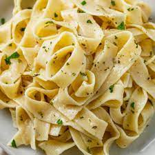

Buttered Noodles Recipe

Ingredients
- Salt
- Egg Noodles
- Butter
- Parmesan Cheese
- Parsley
- Black Pepper
Recipe Instructions
- Heat 2 quarts of water with 1 tablespoon kosher salt in a large pot
on high heat until boiling. Add the egg noodles. Cook for 5 minutes.
Reserve 1/4 cup of the pasta cooking liquid and drain the noodles.
-
Place the drained hot noodles in a large bowl. Add the butter and Parmesan
and stir until the butter has melted. Stir in a tablespoon or two of the
pasta cooking water. Stir in the chopped parsley. Add salt and freshly
ground black pepper to taste. Serve immediately.